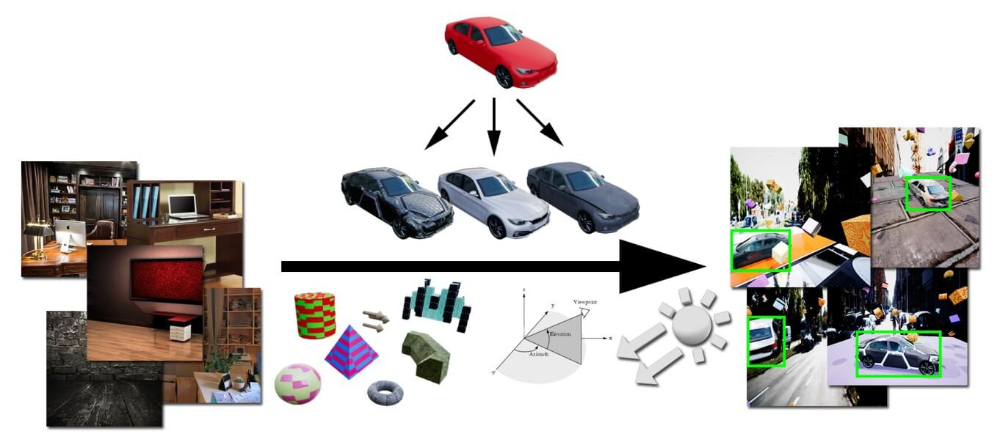
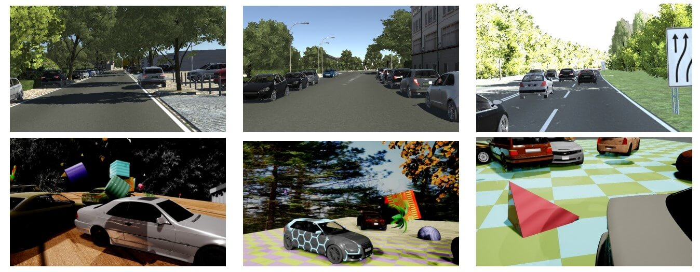
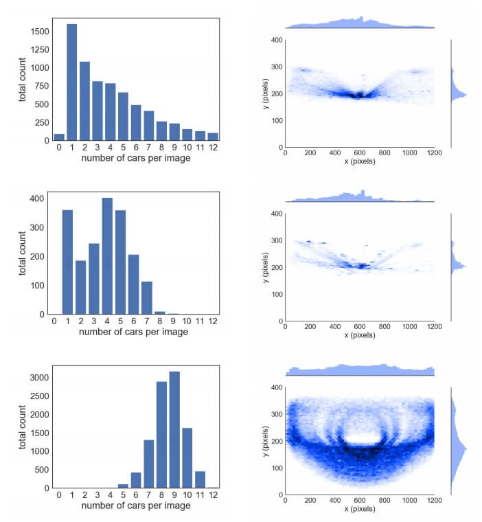
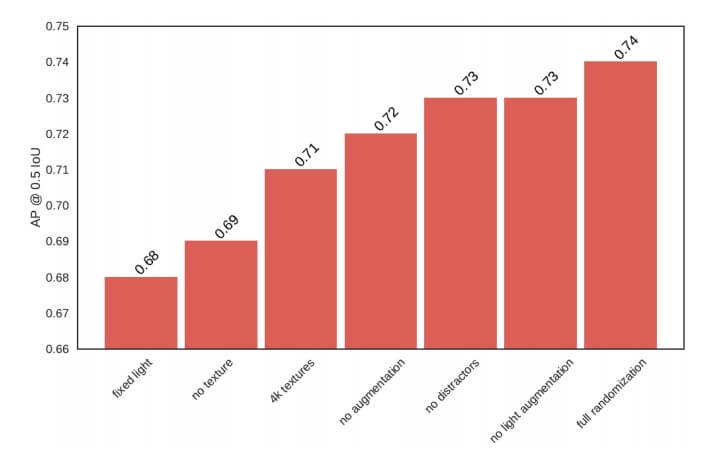
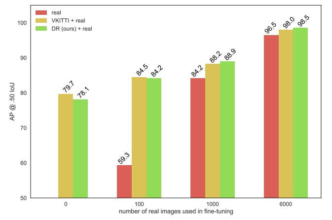
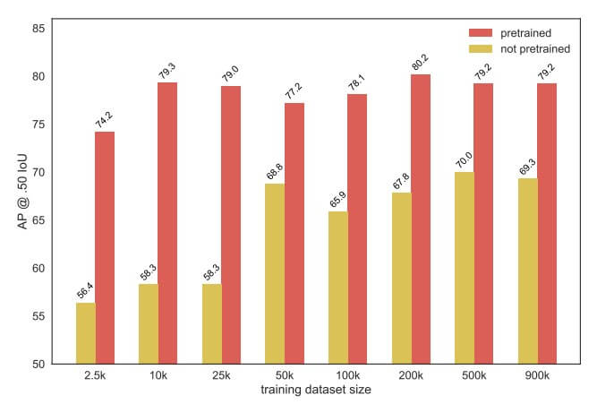

资源
全文
Abstract
-
提出了一个使用合成图像用于目标检测的深度神经网络的系统。为了处理真实世界数据的可变性，依赖于领域随机化（Domain Randomization, DR）技术，该技术中，模拟器的参数如照明、姿势、对象纹理等——以非现实的方式随机化，以迫使神经网络学习感兴趣对象的基本特征。
-
这一结果为使用廉价的合成数据训练神经网络开辟了可能性，同时避免了收集大量手工注释的真实世界数据或生成高保真度的合成世界的需要——这两种情况仍然是许多应用的瓶颈。该方法在 KITTI 数据集上对汽车的 bbox 检测进行了评估。
1. Introduction
-
一些使用图形引擎来生成标记数据的方法成本较高，需要艺术家仔细详细地对特定环境进行建模。
-
领域随机化是一种最近提出的廉价方法，它通过以非真实感的方式（例如，通过添加随机纹理）随机干扰环境，迫使网络学习关注图像的基本特征，从而有意放弃真实感。
在本文中，我们将**领域随机化（DR）**扩展到检测真实世界对象的任务：
-
合成数据能否在真实数据上取得令人信服的结果？
-
在训练过程中用真实数据增强 DR 在多大程度上提高了准确性？
-
DR 的参数如何影响结果？
-
DR 与更高质量/更昂贵的合成数据集相比如何？
-
将 DR 扩展到非琐碎的任务，如在复杂背景前检测真实物体；
-
引入了一种新的 DR 组件，即 flying distractors，提高了检测/估计的准确性；
-
调查 DR 的参数，以评估其对这些任务的重要性；
当仅使用合成 DR 数据进行训练时，我们在现实世界的任务中获得了有竞争力的结果。例如，与在虚拟 KITTI 上训练的相同架构相比，我们基于 DR 的汽车检测器在 KITTI 数据集上获得了更好的结果，尽管后者数据集与测试集高度相关。
2. Previous Work
近年来，使用合成数据训练和测试深度神经网络越来越受欢迎，大量此类数据集的可用性证明了这一点：Flying Chairs、FlyingThings3D、MPI Sintel、UnrealStereo、SceneNet、Scene et RGB-D、SYNTHIA、GTA V、Sim4CV 和 Virtual KITTI 等。这些数据集是为了解决诸如光流、场景流、立体视差估计和相机姿态估计等几何问题而生成的。
Hinterstoisser 等人在合成背景图像之前，使用了通过向感兴趣的对象添加高斯噪声和高斯模糊对象边缘而生成的合成数据。所得合成数据用于训练神经网络的后期层，同时冻结在真实数据（例如 ImageNet）上预训练的早期层。相比之下，我们发现这种冻结权重的方法是有害的，而不是有益的。
作为高保真合成图像的替代方案，Tobin 等人引入了域随机化（DR），他们建议通过生成具有足够变化的合成数据来缩小现实差距，使网络将真实世界的数据视为另一种变化。使用 DR，他们训练了一个神经网络来估计各种基于形状的物体相对于固定在桌子上的机械臂的 3D 世界位置。DR 的引入受到了 Sadeghi 和 Levine 早期工作的启发，他们训练四旋翼机只使用合成图像在室内飞行。用于光流和场景流算法的 FlyingChairs 和 FlyingThings3D 数据集可以被视为域随机化的版本。
域随机化的一种类似方法是将对象的真实图像（而不是合成图像）粘贴到背景图像上，如 Dwibedi 等人所提出的。这种方法的一个挑战是以时间有效的方式从背景中准确分割对象。
3. Domain Randomization
我们使用**领域随机化（DR）**生成用于训练神经网络的合成数据的方法如下图所示。

更具体地说，图像是由：
-
从一组 36 个下载的通用轿车和掀背车的 3D 模型中选择的对象的数量和类型；
-
从一组 3D 模型（圆锥体、棱锥体、球体、圆柱体、部分圆环体、箭头、行人、树木等）中选择的干扰物的数量、类型、颜色和比例；
-
感兴趣对象的纹理和背景照片，均取自 Flickr 8K 数据集；
-
虚拟摄影机相对于场景的位置（方位角 0° 至 360° , 高程从 5° 至 30°);
-
相机相对于场景的角度（平移、倾斜和滚动 -30° 至 30°);
-
除了用于环境照明的平面光之外，点光源的数量和位置（从 1 到 12）；
-
可见的地平面
我们版本的 DR 生成的合成图像与高保真度虚拟 KITTI（VKITTI）数据集的比较如下图所示。

请注意，我们的图像更容易创建（因为它们缺乏保真度），但包含更多的多样性，迫使深度神经网络专注于感兴趣对象的结构。
4. Evaluation
为了量化**领域随机化（DR）**的性能，在本节中，我们将：
- 使用基于 DR 的方法生成的图像训练对象检测深度神经网络（DNN）的结果与使用来自虚拟 KITTI（VKITTI）数据集的合成图像训练的同一网络的结果进行比较。
- 使用真实世界的 KITTI 数据集进行测试。
- 这三个数据集的统计分布如图所示。
- 请注意，与现有方法相比，我们基于 DR 的方法更容易生成具有大量多样性的数据集。

4.1. Object detection
使用如下目标检测算法进行评估：
- Faster R-CNN
- R-FCN
- SSD
4.2. Ablation study
为了研究各个 DR 参数的影响，本节通过系统地一次省略一个参数来进行消融研究。
- Lights variation
- Texture
- Data augmentation
- Flying distractors

4.3. Training strategies
- Pretraining

- Freezing weights
不可取：
| architecture | freezing | full (Ours) |
|---|---|---|
| Faster R-CNN | 66.4 | 78.1 |
| R-FCN | 69.4 | 71.5 |
- Dataset size

5. Conclusion
我们已经证明，**领域随机化（DR）**是弥合现实差距的有效技术。仅使用合成 DR 数据，我们就训练了一个神经网络来完成复杂的任务，如物体检测，其性能与更劳动密集（因此更昂贵）的数据集相当。通过在训练过程中随机干扰合成图像，DR 有意放弃真实感，迫使网络学习关注相关特征。通过对真实图像的微调，我们已经表明，DR 既优于更真实的数据集，又改进了单独使用真实数据获得的结果。因此，使用 DR 来训练深度神经网络是利用合成数据力量的一种很有前途的方法。